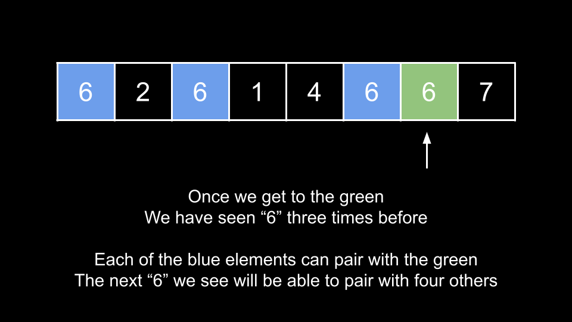

Intuition
The problem description defines a pair (i, j) as needing to have i < j. We can simply
check all these pairs and count the number of pairs where nums[i] == nums[j].
Iterate i over the indices of nums. For each i, iterate over all
j greater than i. If the numbers at the indices match, increment the answer.
Algorithm
ans = 0.i from 0 until nums.length:
j from i + 1 until nums.length:
nums[i] == nums[j], increment ans.ans.Implementation
Java
class Solution {
public int numIdenticalPairs(int[] nums) {
Map counts = new HashMap<>();
int ans = 0;
for (int num: nums) {
ans += counts.getOrDefault(num, 0);
counts.put(num, counts.getOrDefault(num, 0) + 1);
}
return ans;
}
}
C++
class Solution {
public:
int numIdenticalPairs(vector& nums) {
unordered_map counts;
int ans = 0;
for (int num: nums) {
ans += counts[num];
counts[num]++;
}
return ans;
}
};
Python3
class Solution:
def numIdenticalPairs(self, nums: List[int]) -> int:
counts = defaultdict(int)
ans = 0
for num in nums:
ans += counts[num]
counts[num] += 1
return ans
Complexity Analysis
Given nn
as the length of nums,
Time complexity: O(n2)O(n^2)
We have a nested loop over the length of the input. The total iterations is 1 + 2 + 3 + 4 + ... + n, which is the partial sum of this series, which is equal to n⋅(n+1)2\frac{n \cdot (n + 1)}{2} = n2+n2\frac{n^2 + n}{2}. In big O, this is O(n2)O(n^2) because the addition term in the numerator and the constant term in the denominator are both ignored.
Space complexity: O(1)O(1)
We aren't using any extra space except for a few integers.
Intuition
We can improve our performance by using a hash map to count the frequency of the encountered numbers during the traversal.
Let's say that we are iterating over the input, and we encounter a number x = 6. We also know that we
have seen 6 three times before the current index. The current 6 could pair with any of the
previous three to form a good pair.
In general, whenever we encounter a number, it can form k good pairs with previously traversed numbers,
where k is the number of times we have seen the number previously.
Different from approach 1, while this approach doesn't track the indices of each number, we keep a count of their occurrences. This ensures that all good pairs are considered, and because the counts of each number are accumulated as it's traversed, it guarantees that good pairs are counted only once. This way, we avoid both undercounting and overcounting.

Algorithm
ans = 0 and a hash map counts.num:
ans by counts[num].counts[num].ans.Implementation
Java
class Solution {
public int numIdenticalPairs(int[] nums) {
int ans = 0;
for (int i = 0; i < nums.length; i++) {
for (int j = i + 1; j < nums.length; j++) {
if (nums[i] == nums[j]) {
ans++;
}
}
}
return ans;
}
}
C++
class Solution {
public:
int numIdenticalPairs(vector& nums) {
int ans = 0;
for (int i = 0; i < nums.size(); i++) {
for (int j = i + 1; j < nums.size(); j++) {
if (nums[i] == nums[j]) {
ans++;
}
}
}
return ans;
}
};
Python3
class Solution:
def numIdenticalPairs(self, nums: List[int]) -> int:
ans = 0
for i in range(len(nums)):
for j in range(i + 1, len(nums)):
if nums[i] == nums[j]:
ans += 1
return ans
Complexity Analysis
Given nn
as the length of nums,
Time complexity: O(n)O(n)
We iterate over the input once. At each iteration, we perform O(1)O(1) work since hash map operations run in constant time.
Space complexity: O(n)O(n)
In the worst case, the array contains at most nn unique numbers, then counts
will grow to a size of nn.